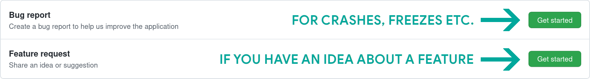

코리더 사용자 안내서
마지막 갱신: 2023-10-12
이 안내서는 컬러의 큰 화면용으로 제작되었으며, 관련 웹사이트 링크가 포함되어 있으므로 전자 잉크 장치 대신 컴퓨터나 태블릿에서 읽어보는 것을 권장합니다. 브라우저의 검색 기능(일반적으로 Ctrl+F)을 사용하여 특정 주제를 찾을 수 있습니다.
텍스트의 일부는 분류에 따라 색깔로 구분합니다:
초록색 • 메뉴 경로
빨강색 • 고급 주제나 메모, 경고
보라색 • 외부 앱이나 서비스
청록색 • 링크
- 버그 수정과 새로운 기능 구현
- 프로그램을 사용자의 언어로 번역하거나 기존의 번역을 개선합니다.
- 포럼에서 자신의 지식으로 다른 사람을 돕기
파일 전송하기
- 장치 지원을 위한 USB 대용량 저장 모드
- 적합한 계정이 있는 (Dropbox/FTP/Webdav) 클라우드 저장소
- KOReader는 SSH 서버 역할을 할 수 있으므로, SFTP 프로그램이나 파일 관리자를 사용하여 파일을 직접 전송할 수 있습니다.
- Calibre 플러그인을 사용하면, Calibre 라이브러리의 책을 Wi-Fi를 통해 코리더 기기로 바로 보낼 수 있습니다.
- 뉴스 다운로더 플러그인을 사용하면 RSS와 Atom 뉴스 항목을 HTML 파일로 장치에 다운로드할 수 있습니다.
- Wallabag 플러그인을 사용하면 Wallabag 계정(Pocket과 같은 서버 기반 나중에 읽기 서비스)에서 글을 검색할 수 있습니다.
- 수동 또는 (기기에서 지원하는 경우) 자동으로 가로 방향으로 변경하기
- 글꼴(직접 만든 글꼴 포함), 글꼴 크기, 대비, 굵기, 커닝, 낱말 간격, 낱말 확장 변경하기
- 본문 정렬과 줄 간격, 열 레이아웃, 여백 변경하기
- 발행인 스타일과 글꼴의 적용 또는 무시하기
- 다양한 스타일로 본문에 강조 표시를 하고 책갈피를 넣으세요.
- 발음 구분 수정자를 포함한 사용자 지정 키보드로 메모 추가하기
- 화면 색깔 반전
- 화면갈무리 찍기
- 자동 페이지 넘기기
- 독서 진행률과 시간 범위, 달력 보기 등의 독서 통계를 살펴보세요.
- 파일과 폴더를 복사, 이동, 이름 바꾸기, 생성, 삭제할 수 있는 강력한 파일 탐색기
- 상세 보기와 모자이크 보기로 책을 볼 수 있는 다양한 선택 사항
- 책을 즐겨찾기에 추가하여 빠르게 접근하기
- 마지막으로 접속한 책을 보여주는 내역
- 페이지, 챕터, 책갈피 사이를 빠르게 이동하는 스킴 위젯
- 모든 메모와 강조 표시를 포함한 책의 조감도를 볼 수 있는 독특한 책 지도
- 페이지 탐색기로 영화 릴처럼 페이지 이동하기
- 책갈피 탐색기로 강조 표시 사이를 쉽게 둘러보기
- 내용을 선택하거나 입력하여 문서를 검색하기(정규 표현식 포함)
- 책갈피와 강조 표시, 메모에서 검색하기
- 위키피디아나 설치된 사전에서 내용을 조회하고, 길게 탭하여 번역하기
- 130개 이상의 언어로 전체 페이지를 한 번에 번역하기
- KOReader에서 직접 업데이트 가능
- 사용자 정의하고 확장할 수 있는 강력한 제스처 시스템
- 빠른 메뉴로 자주 사용하는 작업 메뉴 만들기
- 일정한 간격이 지나면 화면 조명을 어둡게 하거나 끄기
- 수동 또는 자동으로 전면 조명/배경 조명 수준과 색 온도 조절하기
- 무작위 이미지, 책 표지, 읽기, 진행 상황 등 다양한 선택 사항 중에서 나만의 화면보호기를 설정하세요.
- 충전 제한 알람을 설정하여 배터리의 완전 방전/과충전을 방지하기
- 메모리 사용량 알림을 설정하여(메모리가 적은 기기에 유용), 이 한도에 다다르면 선택적으로 KOReader를 다시 시작하기
- 자동이나 수동으로 여백 자르기
- 작은 화면에서 본문을 추출하여 읽기 쉬운 흐르는 문서 만들기
- OCR 적용
- 다양한 확대/축소 유형과 페이지 흐름 방향으로 다단 문서를 쉽게 읽기
- 기울어진 문서를 자동으로 바로잡기
- 만화를 읽기 위한 특별한 패널 확대/축소 기능
- 클립보드에서 QR 코드 만들기
- 책에 대한 나만의 CSS 스타일 덧꾸밈 추가하기
- EPUB 문서에서 선택된 내용의 HTML 소스 보기
- 작업을 자동화하는 강력한 프로필 기능
- 내 기기에서 텍스트 파일 생성과 편집
- 터미널 에뮬레이터를 열여서 내 기기에 명령어 실행하기
- CPU와 메모리, 배터리 사용량 보기
- 메모와 강조 표시를 텍스트, 마크다운, HTML, JSON, Kindle 클리핑 형식으로 내 기기로 내보내기
- Joplin, Readwise, Memos와 같은 온라인 서비스와 동기화하기
KOReader에는 두 개의 주요 인터페이스가 있습니다: 읽기 화면과 파일 탐색기.


이 메뉴를 통해 상단 메뉴와 하단 메뉴를 동시에 열도록 상단 메뉴 영역을 설정할 수 있습니다:
 → 탭과 제스처 → 메뉴 활성화하기
→ 탭과 제스처 → 메뉴 활성화하기
이전 페이지와 다음 페이지 영역은 동시에 두 번 탭 제스처에 사용할 수도 있습니다.
STATUS BAR zone can be tapped to cycle between STATUS BAR items if only one item is visible. If all items are visible, tapping will show and hide the STATUS BAR. Check “How can I configure the status bar ?” heading for more info.


Circled items in the image are explained below:
RESET: This option basically resets your book by deleting its configuration file.
If you select this option, you will lose all your notes and highlights in this book.
OPEN WITH: KOReader has different engines for rendering different file types. In some cases you can open a file in a different engine to get some other features. See Viewing archive files and Viewing image files sections just below.
IGNORE COVER: If for some reason you want to disable the cover for this book (it may have wrong cover or cover is not very readable on the e-ink screen) you can select this.
IGNORE METADATA: If your book metadata is not correct, name field may show useless information. Select this option to show the file name instead of metadata.
REFRESH CACHED BOOK INFORMATION: KOReader caches a book's metadata and book cover when you add it to your library. If you make some changes to the book after copying to your device, this information might need to be updated. If you see wrong cover or metadata, you can refresh the book information with this menu item.
- In File Browser long-press the file name
- Tap Open with…
- Tap Archive viewer
- In File Browser long-press the file name
- Tap Open with…
- Tap Image viewer
- 파일 탐색기
- Favorites
- History
You can assign gestures for each of these dialogs. For example while reading a book, you can access your History or Favorites with a gesture and open another book without going through the File Browser.
You can also set KOReader to start with Favorites or History screen via:
→ Start with- You can change the interface language via:
→ Language

- On the BOTTOM MENU if you tap and hold an option’s name, you can see its explanation.
- You can CLOSE full screen dialogs (History, Table of Contents, Bookmarks, Reading Statistics etc.) by swiping down.
- You can take a screenshot by making a long diagonal swipe with your finger.

- In dialogs containing adjustment arrow buttons like the one above, you can tap and hold on arrow buttons to change the value in bigger increments.
You can CLOSE this type of dialog (non-full screen) by tapping outside of its window.
You can MOVE this type of dialog by holding its window title and dragging.
You can make this type of dialog SEMI-TRANSPARENT by tapping and holding the window title (when you want to see the text under it while adjusting a value).
KOReader supports dictionary lookup in EPUB and scanned PDF/DJVU documents. To see the dictionary definition or translation, just tap and hold a word.
- Tapping and holding a word brings up a dialog where you can also search the selection in the document for more occurrences or look it up on Wikipedia.
- If you want to change the size of user interface, there is a DPI setting for that:
→ Screen → Screen DPIYou can choose a value from the menu or select CUSTOM DPI to enter a value for fine tuning: Higher DPI = Bigger Interface
Note that there is also a Zoom (dpi) setting in the bottom bar. That one is related to the documents only. You can find the explanation in the next section.
- You can disable black flashing (automatic partial refresh to clear ghosting) of user interface if it disturbs you :
→ Screen → E-ink Settings → Help → Menu search
→ Help → Menu searchAlso you can assign this feature to a gesture or add it to your Quick Menu for faster access.
→ Taps and Gestures → ScrollingClassic scrolling: This mode works exactly like your phone/tablet scrolling.
Turbo scrolling: This mode allows you to scroll faster than classic scrolling. Also you can scroll several pages without lifting your finger. Scrolling amount is proportional to the distance you move your finger after you initiated scrolling.
On-release scrolling: This scrolling type is more suitable for e-ink screens. Because unlike other scrolling types, this mode doesn’t refresh your page continuously while scrolling. It works like classic scrolling but intermediate steps are not shown. So you scroll with your finger and when you release, page jumps to that position. This is especially useful to reposition and adjust the view if your book contains pictures or tables and you want to see all of it.
 → Go back to previous location → Screen → E-ink Settings → Full refresh rate → Always flash on pages with images
→ Go back to previous location → Screen → E-ink Settings → Full refresh rate → Always flash on pages with imagesWith this new feature, when reading EPUB documents, text appearance adjustments can be done much quicker by only rendering the current chapter.
Also rotating your screen orientation is now much faster thanks to this feature. This feature is ENABLED by default. If necessary, it can be disabled per book (with a tap), or globally (with a long-tap) on:
→ Document → Enable partial renderingsAfter these partial renderings, KOReader and the book enter a degraded state: You can turn pages but some info and features may be broken or disabled (i.e. footer info, ToC, statistics…). To get back to a normal working state, KOReader has to render the rest of the book too. While this is happening, an icon at the top left corner of the screen indicates the status:
-
 Document is partially rendered. Page count, footer info and many things are innacurate. You can see how the new settings look and adjust further. You can also turn pages, jump links in this state.
Document is partially rendered. Page count, footer info and many things are innacurate. You can see how the new settings look and adjust further. You can also turn pages, jump links in this state.
-
 A full rendering is happening in the background. You can still turn pages, jump links, change settings.
A full rendering is happening in the background. You can still turn pages, jump links, change settings.
-
 Full rendering is done, but not yet applied because KOReader is waiting for you to be idle to reload the rest of the book (idle=not interacting with the device). You can still turn pages, jump links, change settings.
Full rendering is done, but not yet applied because KOReader is waiting for you to be idle to reload the rest of the book (idle=not interacting with the device). You can still turn pages, jump links, change settings.
-
 You've been idle for a while so KOReader is now reloading the whole document. At this step KOReader is blocked to prevent interaction.
You've been idle for a while so KOReader is now reloading the whole document. At this step KOReader is blocked to prevent interaction.

 → Page Overlap
→ Page OverlapZOOM (dpi): This setting can be thought of as a general zoom factor for the document (except font size). At 96 dpi (which is the default setting), images in the document are rendered at their original dimensions. Basically you will use this setting if you want to make images bigger without making the text bigger.

WORD SPACING: How much the SPACE characters in a line of text can be compressed to fit more words. This setting doesn’t affect words, it only changes the space between them.
WORD EXPANSION: If you have too much white space in a line, how much of that can be distributed into the words by expanding them. This setting affects the appearance of words. If you don’t want your words to expand, set this to NONE.
You can experiment with different settings until the text looks pleasing to you, then set them as defaults via their respective dialogs.

+ Doesn’t change font width, book length stays the same
+ Doesn’t need to re-render document, faster
- Might look bad on LCD or low DPI screens
+ Will use proper weighted fonts if you have them installed
+ Looks better on LCD or low DPI screens
- Has to re-render fonts, slower
FONT HINTING adjusts your text for maximum readability according to your screen’s pixel grid. NATIVE uses font’s internal hinting instructions, AUTO uses FreeType’s hinting algorithm. AUTO is a safer choice because font files that you installed may have problematic hinting instructions. Also AUTO handles CJK text better. You can try different settings to see which one looks better on your device.
FONT KERNING adjusts the spacing between letters to achieve a visually pleasing result. Default is BEST, which might be slower when opening files (depending on your device) but has better support for ligatures (see picture below for an example), joined Arabic glyphs and some other scripts. If your device is slow, you can try GOOD which is faster and may still look correct with western latin-script text.

 → Status Bar → Alt status bar → Style Tweaks
→ Status Bar → Alt status bar → Style Tweaks- Double column profile with two columns of small sized text, landscape orientation and minimum margins
- Night reading profile with bigger sans serif font and higher contrast for more visible text under low light
- Disabled styles profile with embedded style and embedded fonts disabled for badly structured books
 → Profiles → New with current document settings
→ Profiles → New with current document settings- You can apply the profile from the Profiles menu
- You can assign a gesture to it
- You can show it in your Quick Menu
Please see the GESTURES, QUICK MENU AND PROFILES chapter for more information.
- You can change the font*: TOP MENU → → Font
- Make the font bigger BOTTOM MENU →

- Make the font bolder BOTTOM MENU →

- Invert the colors on screen (white on black) TOP MENU → → Night Mode
- Change many other formatting options TOP MENU → → Style Tweaks
You can also change other formatting options from the BOTTOM MENU to fine tune the appearance of your text.
You can see your reading statistics via:
→ Reading Statistics → Frontlight → Status Bar → Status Bar → Settings → Show all at once → Status Bar → Settings → Sort items → Alt Status Bar → Screen → ScreensaverYou can use JPG/PNG files as screensaver (properly dithered grayscale images look best). Transfer the files from your computer into any folder on your device. And choose this folder as your screensaver folder via this menu:
→ Screen → Screensaver → Settings- Tap outside the input field to close the keyboard, tap the input field to show the keyboard again
- Swipe up keys to enter uppercase version of that letter (or lowercase if you are already in shift mode)
- You can change the appearance of the keyboard:
TOP MENU → → Device → Keyboard → Keyboard settings
- You can select more than one layout:
TOP MENU → → Device → Keyboard → Keyboard layout
- You can change between your selected layouts by tapping the
 icon on the keyboard
icon on the keyboard
 Additionally there are some shortcuts for easier text manipulation. You can tap and hold these keys for the actions:
Additionally there are some shortcuts for easier text manipulation. You can tap and hold these keys for the actions:
- Backspace - Deletes all characters from the cursor to the beginning of the line
- Left Arrow - Moves the cursor to the beginning of the line
- Right Arrow - Moves the cursor to the end of the line
This plugin comes enabled as default. If it is not in the menu, you can enable it via:
→ More tools → Auto Warmth and Night ModeFIXED SCHEDULE: In this mode your frontlight warmth changes according to the daily schedule you entered. This mode is STATIC, it doesn’t account for daylight length. The schedule stays the same all around the year.
SUN’S POSITION: This option calculates Sun’s position in your location according to COORDINATES and ALTITUDE information you entered. Frontlight warmth is adjusted gradually according to this calculated Sun position data. This mode is DYNAMIC. As the length of daylight changes around the year, plugin adjusts the schedule accordingly.
First have a look at this image to familiarize yourself with the terms used in the plugin:

- Go to the plugin menu: TOP MENU → → Screen → Auto Warmth and Night Mode
- Tap Activate menu item and then ACCORDING TO THE FIXED SCHEDULE
- Go back to previous menu and tap FIXED SCHEDULE SETTINGS menu item
- Set your warmth transition schedule by setting times for various items here. Refer to the image above for an explanation of items.
- Go to the plugin menu:
TOP MENU → → Screen → Auto Warmth and Night Mode
- Tap ACTIVATE menu item and then ACCORDING TO THE SUN’S POSITION
- Go back to previous menu and tap LOCATION SETTINGS menu item. Set your coordinates (necessary) and altitude (optional) correctly and give a name to your location.
- Go back to previous menu and tap WARMTH AND NIGHT MODE SETTINGS menu item
- Set your warmth transition schedule by setting times for various items here. Refer to the image above for an explanation of items.
You can see your current schedule via CURRENTLY ACTIVE PARAMETERS menu option.

When you do this, warm light percentage will increase to 110% indicating that this interval has Night Mode activated. You will see a moon icon in the menu next to this interval. To disable Night Mode you can decrease the percentage to any value under 110.
If you want to manage Night Mode manually (or the reverse) you can change the working mode of this plugin by tapping on the option shown below.

https://github.com/koreader/koreader/wiki/Fonts
When starting up, KOReader compiles the available fonts from the font metadata/info and classifies them according to family and weights. This means you can add different weights and variants of a font and KOReader will try to use the most suitable one. Since it takes font family information from metadata, font names are not important when copying to your device. Installed fonts will be available after restarting KOReader.
You can check the Google Fonts website to get free fonts: https://fonts.google.com
KOReader can generate a document with sample text rendered with all the fonts installed on your device. This allows you to quickly compare the look and features of the fonts like ligatures and character sets in non-Latin scripts like Greek, Hebrew or Chinese. You can access this feature via:
→ Font → Font settings → Generate font test documentIf your book includes parts with Monospace fonts (like in programming books), Monospace font might look disproportional even if they are technically at the same size. This is caused by differing font metrics. If you want to fix this difference, KOReader has an option that allows you to adjust the relative Monospace font size.
→ Font → Font settings → Monospace fonts scalingHere you can increase or decrease the size of your Monospace font by adjusting its scaling as a percentage of the default size.
In HTML/CSS based documents like EPUBs, books can specify to use fonts by family instead of a specific font name. These families can be Serif, Sans-Serif, Monospace, Cursive, Fantasy, Emoji, Fang Song and Math. For example in a book, normal text can be shown in Sans-serif while dialogues are shown in Serif font. KOReader normally uses your default font for all these families except Monospace and Math (which is determined by the style of the text nodes, for example 'font-family: serif'). If you want these families to look distinct, you can assign specific fonts for them here:
→ Font → Font-family fontsTo change a family font for the current book just tap on the desired font name. If you want to set this for all your books, long-tap to set it as a Default (★). If a book abuses this font family feature to the point where your default font is hardly used, you can disable that family font for this book by unchecking the association.

You can use the SKIM WIDGET, BOOK MAP or PAGE BROWSER features.
→ Skim document

If your document has too many heading levels, your chapter marks can look crowded like the example on the left. You can change the depth of visible ToC mark levels via:
→ Settings → Progress Bars
You can also use this reduced ToC for:
- chapter titles (if it is shown on Status Bar)
- chapter navigation
- reading time left estimates
These options are in the same menu.
If your document doesn’t have a Table of Contents, you can enable ALTERNATIVE TABLE OF CONTENTS. When this setting is enabled, KOReader will build a ToC from document headings (if available) or from individual HTML files in the EPUB. Long-tap the menu item for extra info:
→ Settings → Alternative table of contentsAdditionally you can:
- See how much time you have spent on each page (if Reading Statistics plugin is enabled)
- Check which pages have bookmark, highlights and notes
- Navigate directly to any part of the book like the SKIM WIDGET
→ Book map You can customize Book Map by changing these options:
You can customize Book Map by changing these options:
- First try swiping LEFT and RIGHT along the bottom edge of the screen to change width of columns indicating pages and observe how it changes the scale of map
- Then try swiping UP and DOWN along the left edge of the screen to change chapter title depth and switch to the Flat View. See examples below.
In addition to default Grid View above, here you can see the Flat View on the left and Grid View without chapter titles on the right. Note the changing left vertical scrollbar between views. If you want to switch back to the default view, you can long-press the info icon at the upper left corner.


- About book map: Short explanation of Book map usage and icon descriptions.
- Available gestures: Gestures you can use to change the settings of Book map instead of using this menu.
- Page browser on tap: If this is checked, when you tap on a page in Book map, Page browser opens. This shows you an overview of the area you selected. If you disable this option, a tap in Book map directly takes you to that page. But remember, depending on factors like your screen size, touch screen sensitivity, tap accuracy etc. you might end up in adjacent pages.
- Switch current/initial views: If you customized your Book map view, tapping this switches between the default view and your customized view.
- Switch grid/flat views: Switch between seperate chapters or continuous chapters views.
- Chapter levels: Change the depth of chapter/sub chapter levels.
- Page slot width: Make each page slot wider or narrower.
- 10-page markers: As you increase this value, first it will add markers to every 10th page, then it will make them bigger and eventually it will add markers to every 5th page.
→ Page browser
Bookmarks: You can add (and remove) a bookmark by pressing the upper right corner. This is the equivalent of folding the corner of a page on a real book and shows a similar icon when you enable it.
Highlights: You can highlight text in 4 different styles. In the image below, you can see a normal paragraph followed by different styles of highlights. Lighten (with gray background), Underline, Strikeout and Invert.

You can use all these styles at the same time, like they are different colored highlight markers. Or you can decide your favorite style and set it as default from this menu by long pressing:
→ Highlight style To enable this feature and choose a Note marker style, go to:
→ Highlight style → Note marker
To enable this feature and choose a Note marker style, go to:
→ Highlight style → Note markerNormal mode is similar to selecting a text with your finger on a phone/tablet and more suitable if your highlights are shorter than one page.
Select and highlight mode is more suitable for highlighting longer passages which cross page boundaries. It might also work better if you have touch screen sensitivity problems or motor control issues with your hands. Because in this highlight mode you don’t need to drag your finger along the screen.
- Long-press on the starting word
- Move your finger to the end of the passage
- Release finger
→ Taps and gestures → Long-press on text → Dictionary on single word selection
- Long-press (or drag if dictionary lookup is enabled as described above) on the starting word, popup menu will show up.
- Tap on Select, now you are in highlighting mode. When you are in this mode, you will see an indicator at the upper left corner of the screen (which you can tap on it to get more information). You can cancel highlighting by tapping on the beginning of highlight again. You can turn pages with taps/swipes and freely navigate the document (TOC, skim etc) in this mode.
- Long-press (or drag if dictionary lookup is enabled as described above) on the ending word for your highlight, menu will show up again.
- Tap Highlight this time to finish highlighting the passage.
→ Taps and gestures → Long-press on text → Select and highlight → Highlight styleBut if you start highlighting from the middle of a sentence, period at the end will not be included because KOReader assumes that you want to make a partial highlight. So if you want the punctuation marks to be added to your highlight, be sure that you select the whole sentence. Also you can add these marks later by long pressing the Highlight edit buttons.
 When you click on an already highlighted text with a note added, you will see this popup menu. Tap on Edit highlight to open the menu above where you can edit both the highlight and the contained note:
When you click on an already highlighted text with a note added, you will see this popup menu. Tap on Edit highlight to open the menu above where you can edit both the highlight and the contained note:

On your Bookmarks page you can filter the view to see only one type of bookmark by pressing the menu icon ( ) You can also filter by highlight style:

- Move to archive plugin menu
- With a gesture or
- With a Quick Menu entry
Local export: You can export your highlights to your device in these file formats:
- Text (.txt)
- HTML (.html)
- Markdown (.md)
- Kindle Clippings (.txt)
- JSON (.json)
→ Export Highlights → Choose formats and services → Export Highlights → Choose export folderOnline services: You can also export to these services over the network:
- Joplin (a note taking application) - https://joplinapp.org/
- Readwise (an online bookmarks/highlights application) - https://readwise.io/
- Memos (a self-hosted open source memo hub) - https://github.com/usememos/memos
You have to enter your credentials for these services to be able to activate them.
You can find setup instructions for Joplin here: https://github.com/koreader/koreader/wiki/joplin
After selecting your formats, you can export the notes for the current book or all the books in your library from the same plugin menu.
If you want to export only some of the books in your library, you can do this from the File Browser:
- Select multiple books in the File Browser
- Tap on the menu button (shown as a check mark) at the top right corner
- Select Export highlights from the menu shown
1. You can enable REFLOW
→ ReflowReflow tries to extract the text portion from your document (if it is available) and format it as a single column. Results are generally satisfactory. You can also set this as DEFAULT by tapping and holding on it.
2. You can enable ZOOM TO CONTENT →
→ 

With this option KOReader tries to crop margins from your document so text may look bigger on your screen. You can set FIT to WIDTH in the same menu which will try to fit only page width instead of whole page, so your text will look bigger.
3. You can try to use your device in LANDSCAPE orientationThis will make your screen wider so your document may look big enough to read comfortably.

This is especially helpful with comic books. First enable COLUMN MODE from this menu item:
→ 
Then select an appropriate flow direction for your document from the same menu:

- For example if you are reading an article which has two columns, you will scroll down until the end of page reading left column then go to right upper side to continue reading right column:
 - Or if you are reading a comic book, you will want to go “right → down left → right” in a zigzag pattern:
- Or if you are reading a comic book, you will want to go “right → down left → right” in a zigzag pattern:  - For a Japanese comic book (right-to-left panel order) this might be the reverse:
- For a Japanese comic book (right-to-left panel order) this might be the reverse:

In this mode you can also adjust Horizontal/Vertical Overlap and Number of Columns from the same menu to fit the text on your screen better. Feel free to experiment with settings.

CONTRAST This setting adjusts black levels in your document. Be aware that same contrast value applies to both text and images in your document. If you set it very high, your images may become too dark to be readable.
DEWATERMARK Removes watermarks from the rendered document. It can also be used to remove gray backgrounds. This feature can convert a grayscale or color document to black & white to produce more contrast for easier reading.
RENDER QUALITY (REFLOW MODE) Sets the quality of text and image extraction processing and output. HIGH is more pleasing but it can be much slower (several seconds for page turn) than DEFAULT depending on your document. If your PDF/DJVU files are slow, this is the first setting you should check.

DOCUMENT LANGUAGE Sets the language to be used by the OCR engine.
FORCED OCR Force the use of OCR even if the document has a text layer
WRITING DIRECTION (REFLOW MODE) Text direction of original document. Set to RTL for languages like Arabic and Hebrew.
DOCUMENT COLUMNS (REFLOW MODE) Number of text columns in the original document.
 AUTO STRAIGHTEN feature can straighten the pages of a problematic document, for example pages of a PDF which are scanned with an angle. It is available in PDF, DJVU, CBZ/CBT documents and image files. To enable, choose the maximum tilt angle which KOReader will try to correct. If it doesn’t correct you might have to choose a bigger angle. Note that this feature might slow down your reader depending on several factors.
AUTO STRAIGHTEN feature can straighten the pages of a problematic document, for example pages of a PDF which are scanned with an angle. It is available in PDF, DJVU, CBZ/CBT documents and image files. To enable, choose the maximum tilt angle which KOReader will try to correct. If it doesn’t correct you might have to choose a bigger angle. Note that this feature might slow down your reader depending on several factors.
In order to use this feature you need to:
- Install Tesseract language data to your KOReader
- Add newly installed languages to koreader/defaults.lua configuration file (necessary only if your language is other than English or Chinese)
→ Panel Zoom (manga/comic)
If you want to use this feature with other file types like EPUB, FB2, HTML or image files, you should open the file with a different engine: In the File Browser long-tap on the file name, tap Open with… and select MuPDF.
Note that some devices support only single touch. So multi-finger gestures are not available on them.

TAP / DOUBLE TAP
Single or double tap with ONE finger
WORKS: Anywhere on the screen

TAP AND HOLD
Single tap and hold with ONE finger
WORKS: Only on four corners

TWO FINGER TAP
Single tap with TWO fingers at the same time
WORKS: Only on four corners

SPREAD AND PINCH
Same gesture as zooming in and out on a mobile phone, tablet etc.
WORKS: Anywhere on the screen

ONE FINGER SWIPE
Swiping motion with ONE finger
WORKS: Screen edges (HORIZONTAL and VERTICAL) Anywhere except edges (DIAGONAL)

TWO FINGER SWIPE
Swiping motion with TWO fingers at the same time
WORKS: Anywhere on the screen

MULTISWIPE
More than one swipe done after each other without lifting your finger. For example like drawing the letter U (DOWN-RIGHT-UP)
WORKS: Anywhere on the screen
Icons by Econceptive from the Noun Project
→ Gesture Manager- Top Left Corner > Toggle page flipping
- Top Right Corner > Toggle bookmark
- Left Side > Go -10 pages
- Right Side > Go +10 pages
- Short diagonal swipe > Full screen refresh
- Long diagonal swipe > Take screenshot
- ← → - Back to previous location
- → ← - Go to latest bookmark
- ↓ ↑ - Skim document
- ↑ ← - Bookmarks
- ↑ → - Table of contents
- ↓ ← - Show frontlight dialog
- ↓ → - Toggle reflow
- → ↑ - History
- ← ↑ - Book status
- → ↓ - Go to page
- ← ↓ - Back
- ↑ ↓ ↑ - Previous chapter
- ↓ ↑ ↓ - Next chapter
- ← → ← - Open previous document
- → ← → - Favorites
- Reading progress
- Open previous document
- History
- Favorites
- File browser
- Dictionary lookup
- Wikipedia lookup
- Fulltext search
- File search
- Show menu
- Menu search
- Screenshot
- Show ephemeris
- Calibre 메타 데이터 검색
- Browse all calibre tags
- Browse all calibre series
- Browse all calibre authors
- Browse all calibre titles
- (Execute) Profile x
- Statistics calendar view
- Statistics today’s timeline
- Open vocabulary builder
- Exit screensaver
- Exit KOReader
- Restart KOReader
- Toggle hold corners
- Toggle touch input
- Rotation
- Toggle orientation
- 회전 반대로
- Rotate by 90 CW
- Rotate by 90 CCW
- Toggle Fullscreen
- Show network info
- 시스템 통계
- Toggle night mode
- 야간 모드 설정
- Full screen refresh
- 자동 색 온도 끄기
- 모드를 통한 자동 색 온도 주기
- Open next document in folder
- Show bottom menu
- Toggle status bar
- Previous chapter
- Next chapter
- First page
- Last page
- Turn pages
- Go to page
- Skim document
- Previous bookmark
- Next bookmark
- Go to latest bookmark
- Back
- Back to previous location
- Forward to next location
- Follow nearest link
- Follow nearest internal link
- Add current location to history
- Clear location history
- Table of contents
- Book map
- Book map (overview)
- Page browser
- Bookmarks
- Bookmark search
- Book status
- Book information
- Book description
- Book cover
- 현재 페이지 번역
- 책갈피 토글
- 페이지 넘김 방향 토글
- Invert page turn buttons
- Set highlight action
- 강조 표시 동작 순환하기
- Cycle highlight style
- Save book metadata
- Move current book to archive
- Book statistics
- 책 통계 동기화
- Folder up
- Show plus menu
- Toggle select mode
- 콘텐트 새로 고침
- Folder shortcuts
- Go to page
- Back
- Set font
- Increase font size
- Decrease font size
- Set font size
- Word spacing
- 낱말 확장
- Contrast
- Font weight
- Font hinting
- Font kerning
- Two columns
- L/R margins
- Sync T/B margins
- Top margin
- Bottom margin
- View mode (page-continuous)
- Render mode
- Zoom
- Line spacing
- Alt status bar
- Embedded style
- Embedded fonts
- Image scaling
- Invert images
- Toggle page flipping
- Toggle bookmark flipping
- Toggle reflow
- Zoom mode
- Change zoom factor
- Toggle panel zoom
- Page crop
- Margin
- Horizontal overlap
- Vertical overlap
- Fit
- 확대/축소 인수
- Zoom to
- Direction
- View mode
- Page gap
- Progress bar
- Line spacing
- 정렬
- Font size (set)
- Font size (inc/dec)
- Word gap
- Reflow
- Contrast
- Dewatermark
- Render quality
- Document language
- Forced OCR
- Writing direction
- Auto straighten
- Document columns
- Open top menu - F1
- Navigate to home - Home
- Navigate file list - Up/Down
- Open selected book - Enter
- Show selected book’s context menu - Right
- Exit application - Esc
- Open selected page link / Open bottom menu - Enter
- Open top menu - F1
- Back/exit application - Esc
- Show bookmarks - B
- Show TOC menu - T
- Enter highlighting mode - H
- Start/stop highlight selection - Enter
- Move highlight indicator - Left/Right/Up/Down
- Move highlight indicator faster - Shift+Left/Right/Up/Down
- Exit highlight mode - Esc
- Show font menu - F
- Increase font size - Shift+Page Up
- Decrease font size - Shift+Page Down
- Select next page link - Tab
- Select previous page link - Shift+Tab
- Zoom in - Page Down
- Zoom out - Page Up
- Next/previous page/view - Left-Right / Up-Down / Page Up-Page Down
- Go to the beginning of book - 1
- Go to 11% of book - 2
- Go to 22% of book - 3
- Go to 33% of book - 4
- Go to 44% of book - 5
- Go to 55% of book - 6
- Go to 66% of book - 7
- Go to 77% of book - 8
- Go to 88% of book - 9
- Go to the end of book - 0
- Go to the beginning of book - Q
- Go to 11% of book - W
- Go to 22% of book - E
- Go to 33% of book - R
- Go to 44% of book - T
- Go to 55% of book - Y
- Go to 66% of book - U
- Go to 77% of book - I
- Go to 88% of book - O
- Go to the end of book - P
- Zoom in - Shift + PgUp
- Zoom out - Shift + PgDown
- Zoom to fit page - A
- Zoom to fit page width - S
- Zoom to fit page height - D
- Zoom to fit content - Shift+A
- Zoom to fit content width - Shift+S
- Zoom to fit content height - Shift+D
- Manual zoom mode - Shift+M
Basically, any action you can assign a gesture can be added to the Quick Menu. Its advantages are:
- You don’t need to memorize lots of gestures for every action.
- Some infrequent actions may not worth a gesture but it can be too much hassle to find it in the menu system. You can add this kind of rarely used actions to this menu instead.
- If you are installing KOReader for a relative or friend, you can add their favorite actions to this menu so they don’t even need to go into the menu system while using KOReader.
An example Quick Menu:

There are two methods for creating a Quick Menu. Easy and Advanced. If you need only one menu, Easy method should be enough for you. If you want show different menus with different gestures you need to use Advanced method. Another advantage of Advanced method is that, if you want to use another gesture for your menu you can easily move it to another gesture. If you want to use another gesture while using the Easy method, you have to re-create your menu under the new gesture.
- Go to Gesture Manager menu via:
TOP MENU → → Taps and Gestures → Gesture Manager
- Decide a gesture for opening your menu and tap on it.
- Choose the actions you want to see in your menu from the gesture configuration menu. You can select many actions at once of course.
- After selecting all your actions, you will tell KOReader to treat this gesture as a menu. You achieve this by enabling Show as Quick Menu item on the second page as you can see in the picture below.
- You can sort your menu items with the Sort option just below it.
Now you can launch your menu with the gesture you selected. If you want to change the menu items, you can open the gesture page and add/remove items.

Quick Menu is actually a Profile which appears on your screen as a menu. So first you have to learn about Profiles. If you already know how to use Profiles, you can continue reading, otherwise jump to the Profiles heading (next section), create a Profile with some items and come back here.
We assume that you already created a Profile as instructed in the previous paragraph. Now we will turn our Profile into a Quick Menu.
1. Go to your newly created Profile and enable Show in action list (shown in the image below). This will make your Profile visible in the Gesture Manager. Also enable Show as Quick Menu (also in the image below) so your profile will be shown as a menu instead of being silently executed.

2. Now we need a way to access our menu. Go to the Gesture Manager and choose a gesture from the list to assign to our menu. Let’s say we want to tap the corner of the screen to show menu. Now tap on Tap corner then choose Bottom left. Now tap on General and go to the second page. You will find your profile as Profile x where x is the name you gave to this Profile. Tap on its checkbox to assign your profile to this gesture.
After all the steps, now you should see your menu when you tap on the bottom left corner. You can edit your menu by going to its Profile page where you can add or remove items. Also there is a Sort item there so you can change the order of your menu items.
As we said, a Quick Menu is actually a Profile. Which means you can have more than one menu. You can create another Profile and follow the same steps to create another menu if you want.
As an example, imagine that when reading some type of books, you always:
- Rotate the screen to landscape orientation
- Increase the font size and contrast and
- Turn the screen light on
With the profiles plugin, you can do all these at once with a single action.
To create a profile first be sure that Profiles plugin is activated. If you don’t see it under:
→ Profilesthen you have to turn it on from:
→ More tools → Plugin management
When you tap on Edit actions menu item you will see the menu on the right. This is the same menu as the gesture selection menu and there are actions in many categories. Which means you can perform any Gesture action using a Profile.
You can now select several items from all these categories. The actions you selected here will be performed when you activate this profile.
- You can activate a profile with a long press on its name from this same Profiles menu
- You can activate a profile using a gesture. For this, you have to enable Show in action list from the profile’s menu. Now you can select it via:
TOP MENU → → Taps and gestures → Gesture manager → “ANY GESTURE” → General → Profile “Your profile name”
- You can also activate a profile automatically when KOReader starts if you enable Autostart in the Profile’s menu. Note that this is only possible when KOReader is starting with the File browser or Last file.
- As a profile (which is explained as the Advanced Method and stored in settings/profiles.lua)
- As a list of actions assigned to a gesture (which is explained as the Easy Method and stored in settings/gestures.lua)
This set can also be executed in two different ways:
- Applying each action in the (sorted) order when triggered (as a Profile)
- Showing it as a Quick Menu
Adding/removing actions of a set and enabling/sorting Quick Menu are done via the same actions menu. The only difference is that the actions menu in the Gesture manager has two more items (Pass through), that is why Show as Quick Menu and Sort items are on the second page.
- They are directly accessible from the KOReader plugins menu.
- They don’t need installation. You can enable them from the menu.
- They are checked by our developers so they are considered safe.
- They are automatically updated when you update KOReader.
You can enable/disable them via:
→ More tools → Plugin management- They have to be installed manually and then activated from the plugins menu.
- They should be updated manually.
- They are checked by our developers at the time they were added to our repository so they are considered safe.
- They have to be installed manually and then activated from the plugins menu.
- They should be updated manually.
- They are NOT checked by our developers so be aware that there might be risks using them.
Some notable examples of these external plugins:
- AskGPT: You can ask questions to ChatGPT about parts of your book. You can also use this plugin to simplify, explain, discuss or translate text to other languages. https://github.com/drewbaumann/AskGPT
- Anki plugin for KOReader: KOReader plugin enabling Anki (an open-source flashcard software) card generations for words looked up in the internal dictionary. https://github.com/Ajatt-Tools/anki.koplugin
- Zotero for KOReader: This addon allows you to browse your Zotero (an open-source reference management software) collections from KOReader. https://github.com/stelzch/zotero.koplugin
Also you can click this link to open a search page on Github to discover more KOReader plugin projects: https://github.com/search?q=koplugin&type;=repositories
Auto frontlight - Automatically toggles the frontlight according to ambient light level (Only available on Kindle Voyage and Oasis)
Auto warmth and night mode - Allows you to adjust frontlight warmth in devices with natural (yellow/orange) light and set Night Mode automatically according to a schedule
Auto power save - Puts the device into standby, suspend or power off after specified periods of inactivity
Autosuspend - Suspend device after chosen period of inactivity (available on all e-ink devices except android os)
Autoturn - Automatically turns the page after a set period of time
Background runner - Service to other plugins: Allows tasks to run regularly in the background.
Battery statistics - Collects and displays battery usage statistics of your device
Book shortcuts - Allows adding a book shortcut to a gesture
Calibre - You can send documents from your Calibre Library directly to your KOReader devices via WiFi connection. Check the wiki for how-to: https://github.com/koreader/koreader/wiki/Calibre-wireless-connection
Cover browser - Allows cover display modes for file browser and history
Cover image - Saves the cover image of the current book as a file (available on Android/PocketBook/reMarkable devices)
Export highlights - Export highlights and notes to local files or to Joplin (a note taking application)
Flashcard trainer - Show flashcards using spaced repetition (SM2) of highlight from your library
Gestures - Provide gesture support for KOReader
Japanese support - Japanese language support for KOReader that extends built-in dictionary and selection system
Keep alive - Keeps the device awake to prevent automatic WiFi disconnects
Move to archive - Moves current document to archive folder
News Downloader - Retrieves RSS and Atom news entries and saves them as HTML files. Check the wiki for how-to: https://github.com/koreader/koreader/wiki/News-downloader
OPDS - Allows you to download books from online catalogs
Perception expander - Allows using peripheral vision to read more quickly. Check this YouTube video to see how it works: How to Triple Your Reading Speed in 20 Minutes (Tim Ferriss)
Profiles - Allows combining multiple settings to make switchable profiles
Progress sync - Synchronize your reading progress across different KOReader devices. Check the wiki for how-to: https://github.com/koreader/koreader/wiki/Progress-sync
QR from clipboard - Generates a QR code from clipboard content
Read timer - A countdown timer to display a message after a user defined time
Reading statistics - Calculates reading sessions statistics and reading speed for use in chapter/book remaining time estimations
SSH - Allows access to your device over SSH protocol. You can access via FTP applications or even your file manager if it supports. Check the wiki page for how-to: https://github.com/koreader/koreader/wiki/SSH
System statistics - You can see your CPU/RAM/BATTERY info via this plugin under:
→ Help → System statisticsTerminal emulator - Starts a shell (command prompt) on your device that can run full terminal apps
Text editor - A basic text editor to create and edit plain text files
Time sync - Synchronizes the device time with NTP servers
Tweak document settings - Allows tweaking settings of a document before it is loaded based on external factors
Wallabag - Downloads the latest articles from a Wallabag server as individual EPUB files. Check the wiki page for more info: https://github.com/koreader/koreader/wiki/Wallabag
You can find a current list of User patches in the related GitHub wiki page:
https://github.com/koreader/koreader/wiki/User-patches
and in the issues list under the User patch available tag:
https://github.com/koreader/koreader/issues?q=+label%3A%22User+patch+available%22
Basic usage – Adding an already written patch to your KOReader:
- Create a directory named patches under koreader directory on your device (On Android this folder is located on the SD-card)
- Download and put the patch file with .lua extension in this patches directory
- Restart KOReader
Patch manager
When you create a patches directory as instructed, a new plugin named Patch Management becomes available in the plugins menu after restarting KOReader. With this plugin you can see the list and status of your user patches and enable/disable them. You can tap About patch manager menu item to see more info.
Naming the patch
Execution order of a patch is determined by the first digit of the number in the patch name. For example: 2-TOC-title-patch.lua If there are several patches starting with the same digit, the execution order is the natural order (1<10<11<12<13<…<109<…<10010). If you are just downloading an already made patch you don’t need to change the file name.
Names starting with:
- 0 - Executed very early and only once after an update
- 1 - Excuted very early on every start of KOReader (but after 0 if applicable)
- 2 - Executed after UIManager is ready on every start of KOReader
- 3-7 - Reserved
- 8 - Executed before exit and before settings get saved
- 9 - Executed right before exit
If you have a problem with a user patch, you can revert to your previous configuration by removing the patch file.
KOReader can reflow PDF documents (this option can be found in the bottom menu while reading a fixed-layout document like PDF) to make them suitable for the small screens of e-readers. But for best results, you may want to convert your documents into more flexible EPUB format. You can use Calibre (https://calibre-ebook.com/) for all kinds of conversion between formats.
There are many ways to transfer your documents to your device. Note that you may need to restart KOReader to index the transferred documents (or refresh directory if you have Pocketbook/Android).
In addition to transferring files the same way you would with the built-in reader application, other options are available depending on your device:
- USB mass storage mode within KOReader: This mode is available for KOBO and some CERVANTES devices.
- Cloud storage (Dropbox/FTP/Webdav): To use this function you have to add accounts for a cloud storage server via menu shown below. Process is explained via INFO buttons while adding accounts:
TOP MENU (in File Browser) → → Cloud storage
- SSH/SFTP access: KOReader can act like an SSH server, which you can access from a computer to transfer files (available on Kobo, Kindle, Cervantes). You can use an SFTP application (like Filezilla) or access via your file manager if your operating system supports. Check wiki for how-to: https://github.com/koreader/koreader/wiki/SSH
- Calibre transfer: With the Calibre plugin you can send documents from your Calibre Library directly to your KOReader devices via a wifi connection. Check wiki for how-to: https://github.com/koreader/koreader/wiki/Calibre-wireless-connection
- News downloader: With this plugin you can download RSS and Atom news entries as HTML files. Check wiki for how-to: https://github.com/koreader/koreader/wiki/News-downloader
- Wallabag: With this plugin you can retrieve articles from Wallabag, a server based read-it-later service like Pocket. Check wiki page for more info: https://github.com/koreader/koreader/wiki/Wallabag
Calibre can convert your documents between many formats. It also has a built-in editor that allows you to edit e-books (and fix problems) in the most popular e-book formats, EPUB and Kindle. https://calibre-ebook.com/
K2pdfopt optimizes PDF/DJVU files for mobile e-readers and smartphones. It works well on multi-column PDF/DJVU files and can re-flow text even on scanned PDF files. It can also be used as a general PDF copying/cropping/re-sizing/OCR-ing manipulation tool. https://www.willus.com/k2pdfopt/
SingleFile is a browser extension for Mozilla Firefox, Google Chrome and Microsoft Edge. This extension allows saving a web page as a single .html file with all resources (images, stylesheets, scripts) embedded. https://github.com/gildas-lormeau/SingleFile#install
DEFAULT CASE: yourfilename.zip - Assumed to be a zip file of images (and opened by MuPDF engine)
If your zip file contains one of these types (instead of just images), please name it accordingly:
- FictionBook - yourfilename.fb2.zip
- HTML - yourfilename.htm.zip / yourfilename.html.zip
- Text log files - yourfilename.log.zip
- Markdown - yourfilename.md.zip
- Rich Text Format - yourfilename.rtf.zip
- Plain text - yourfilename.txt.zip
If the documents are not named like this, the wrong reader/format engine is likely to be used and you will see the No reader engine for this file or invalid file message. You can rename this file as explained above or long-press the filename and then choose Open with... to select the correct engine.
File types like MOBI and EPUB are not suitable for handling primarily image content (e.g., manga/comics). MOBI support in KOReader is minimal to nonexistent, and EPUB’s text rendering priorities can cause problems when showing full-page images (for further technical details: https://github.com/koreader/koreader/issues/9163#issuecomment-1146637205).
Your best option is building a CBZ file which works better in KOReader. A file with .cbz extension is a zip file (with no compression) that is a collection of images. It saves multiple images, commonly .png or .jpeg files, organized into pages of the comic. KOReader can also open CBT files, which are similar to CBZ files but use TAR archive format.
Easiest way to convert a manga to CBZ is to get the manga as images from various websites, then convert them using Kindle Comic Converter (https://github.com/ciromattia/kcc). There are some useful settings like auto-rotating two-page splits to landscape and applying dithering so that eink-rendered gradients are smoothly dithered without jagged layers.
The best results can be achieved by resizing your images to exactly your e-reader screen size. A screen-specific CBZ which targets the exact screen size of the device, prevents rescaling during reading. KOReader downscales your images to your screen size while reading but this is not recommended because KOReader adds a dithering pass before scaling and this causes loss of quality.
But if you want to use your hand made CBZ on more than one device or you want to preserve high resolution for future proofing, your best option might be to make the CBZ for your highest resolution device. Or pick an arbitrary "high" resolution, possibly one that matches the source. 300 PPI or better (up to 450 or even 600), unless the source is lower of course. If we assume a screen size of 8", 1500×2000 is a good target resolution. For bigger images, you should try it on your device and see whether it can deal with it. Especially old Kindles with low memory can struggle with sizes like 3000×4000 for example. If you're automating the process, it might be worth considering creating both a lower and higher quality version (e.g., at 200/400 or 300/600 DPI).
→ Taps and gestures → Page turns → Invert page turn tap and swipes / buttons- Download Kindle Comic Converter (KCC) from https://github.com/ciromattia/kcc
- Download your manga from the source of your choosing (i.e. HakuNeko)
- Unpack the manga file. Now you should have a directory that contains only images (or subdirectories with images, no archives)
- Process this directory with KCC. Each directory will produce a single CBZ file, so if you want to make several volumes at once, select multiple directories at once
Some useful settings of KCC:
Spread splitter: This feature detects double pages and allows you to rotate or cut them in two.
Upscaling: Enlarge images that is smaller than your target resolution.
You can use ImageMagick to process your images. ImageMagick, is a powerful open-source software suite for displaying, creating, converting, modifying, and editing raster images. You can download ImageMagick and use it from the command line to process many images at once.
- Unpack the prepared CBZ file that you created with KCC,
- Download the following file (dither_pack.zip) which contains two batch files (.BAT) and a GIF color template: https://disk.yandex.com/d/glEebjmPYYp7og
- Extract these three files next to your images that will be processed
- Edit the _magick_manga_ditherN_resize.bat and change the resolution to your device resolution (in both places in the BAT file).
Next step will replace all the images in the directory with the processed ones. So make sure that you have a copy of them in some other directory if you want to keep the originals.
- Run _magick_manga_ditherN_resize.bat to resize and dither the images.
- Assuming you have 7-Zip installed, run _batch_archive.bat to pack all the processed images into a CBZ archive.
["/storage/emulated/0/Books/manga"] = {
["inverse_reading_order"] = true,
["kopt_zoom_direction"] = 0,
},
where /storage/emulated/0/Books/manga is the absolute path to the directory containing your mangas. After this change, when you open a file from the mentioned directory, your swipes and tap zones will be swapped.
KOReader can update itself over Wi-Fi. You can trigger the check via this menu item:
→ Update → Check for updateKOReader can dim your frontlight to preserve battery if your device is idle for a while. You can turn on and adjust this feature via:
→ Screen → Automatic dimmerIf you want to know how many lines or words are being shown on the current page you can see it at:
→ Book information- Choose any gesture (including the complex ones with custom multiswipes) and make it your "unlock" gesture by going to:
TOP MENU → → Taps and gestures → Gesture manager → "your selected gesture" → Device → Exit screensaver
- And then enable this option:
TOP MENU → → Screen → Screensaver → Settings → Keep the screensaver on screen after wakeup → Until 'Exit screensaver' gesture
If you need to switch between two documents (when comparing them for example), there is a quicker way than going through the File Browser. KOReader can open the last document with a gesture (←→← multiswipe). If you define a gesture’s action as Open previous document, you can switch between two documents quickly similar to Alt+Tab feature on the desktop computers. You can find this feature under:
→ Taps and gestures → Gesture manager → “ANY GESTURE” → General → Open Previous DocumentAlso you can use the History dialog to switch between documents quickly. The history screen can be opened with the →↑ multiswipe gesture. You can also define any other gesture for this of course.
Applying current defaults to an already opened bookWhen you adjust your document defaults like default line spacing or default contrast, this new value will only be used for the new documents you open after the change. Your already opened books will look the same. For example, if you change your default FONT, you will probably adjust FONT WEIGHT and LINE SPACING to more suitable values for this new font. Then probably you will want to apply these changes to all your opened books. With this feature you don’t need to change these values manually in all your opened books.
You can easily apply these changes to your already opened books by choosing:
→ Reset document settings to defaultWhen you click this option, your current book will reset to latest defaults you set. Don’t worry, this will only change the appearance of the book. Your reading position, highlights, notes and bookmarks will be preserved.
Saving current book settings as defaultsWhen you adjust a book to your liking, for example by changing line spacing, font contrast etc. you can save all the changes at once as defaults. Then you can apply these settings to other books with the Reset document settings to default option as explained above.
You can save your changes as defaults by choosing:
→ Save document settings as defaultIf your document has links and you are accidentally clicking them while turning the page or using other gestures, you can turn off Following links by tapping via this menu item:
→ Taps and Gestures → Links → Tap to follow linksAfter disabling this setting, to follow a link you have to long-tap on it and select Follow link from the popup menu. If you have the opposite problem and you want to make tapping links easier, you can enable Allow larger tap area around links from the same menu.
Optimizing your battery lifeLi-ion batteries experience more degradation at the extreme ends of their charge levels. To minimize this degradation and extend your battery life, you can limit your minimum discharge level to 20% and maximum charge level to 80% (as in electric vehicles and some newer phones). Which means you start charging your device when the battery goes down to 20% and unplug when it reaches 80% (or 25%-75% if you are extra cautious).
KOReader can warn you by showing an alert when charge level reaches your defined limits:
→ Device Status Alerts → Battery LevelIn older Kindle devices some of our users reported crashes due to limited memory. KOReader memory usage can go up if you open many files in one session. Especially PDF’s increase this amount. You can add a memory indicator to your STATUS BAR and restart KOReader if this value gets high, to avoid crashes or reboots.
→ Status Bar → KOReader memory usageAlso you can configure KOReader to restart automatically if memory usage reaches a threshold via:
→ Device → Device Status AlertsYou can see your detailed battery usage statistics via this menu item:
→ More Tools → Battery StatisticsYou can see your system information like CPU/DISK SPACE/RAM usage via this menu item:
→ Help → System statisticsChanging your book cover
You can change your book cover from this menu:
→ Book information → → Set cover imageIn reading statistics you can change the start of day used for calculations. This is useful if you are reading after midnight for example and want your reading session counted as today instead of the next day. This applies only to the Day timeline view and optionally to the Calendar view; it does not apply to any of the other statistics reports. You can set this time at:
→ Reading statistics → Settings → Daily timeline starts at...Probably you tapped on STATUS BAR touch zone (check USER INTERFACE section to see an overview of touch zones) and hide your status bar. You can bring it back by tapping the same zone. Check “How can I configure the status bar ?” section to see details.
Sometimes my taps are registered as a long tap or double tapsThis can happen in cases like shaking hands or device touch screen problems. If you have this problem, you can try to increase the Tap interval. By increasing this interval, you tell KOReader to ignore quick taps at the same location.
→ Taps and Gestures → Gesture intervals → Tap intervalIf your two consecutive taps are separated by a distance, this would not apply. So you can still quickly browse pages by tapping quickly alternatively with two fingers.
KOReader can't write to the SD cardIn Android devices KOReader can’t write to the external storage due to Android system restrictions. If you want to change your screenshot saving location, be careful to choose your device’s internal storage.
My PDF/DJVU files are slowIf you set your RENDER QUALITY to HIGH text will be more pleasing but it can be much slower (several seconds for page turn) than DEFAULT depending on your document. If your PDF/DJVU files are slow, this is the first setting you should check.
→ Render QualityEven if KOReader is set to full refresh after every page, you may still see some ghosting/residue after turning pages. This is a limitation of e-ink screen technology and can be observed on the latest generation devices, especially while reading mixed content (text+images) documents. As a workaround, you can refresh one more time manually after turning the page to get rid of these artifacts if they bother you (short diagonal swipe gesture by default).
Sleep cover problemsSleep covers generally use a magnet embedded in the cover which enables wake up and sleep events via triggering a sensor in your device. In some cases like misaligned magnets, weak magnets etc. this triggering can be problematic. If you are having problems with waking up your device with your cover, you can disable this feature via this menu:
→ Device → Ignore all sleep cover eventsIf you get miscentered titles, headings or separators, or unexpected text indentation, try switching the style for your document. epub.css to html5.css. This kind of problems happen because some publishers assume their books will only be read on web browser engine based readers, so they don't bother "resetting" the styles.
→ StyleCleaning your book cover cache database
KOReader keeps a cache of your book covers to be able to show them quicker. In normal conditions this cache doesn’t get too big. If you remove lots of books or rename directories, you may want to clean up your book cover cache database to reclaim some space. You can do it from this menu:
→ Settings → Mosaic and detailed list settings → Book info cache managementWhen you are reading a PDF/DJVU document, KOReader keeps a cache of the last page you have read. So when you reopen the book, it will be faster. But this cache can grow big if you are using KOReader for a long time and reading many PDF/DJVU documents. These cache files are kept under your KOReader installation directory under the cache folder. To clear this cache and reclaim the space you can go to:
→ More tools → Developer options → Clear cachesBacking up your KOReader settings
In rare cases that you want to backup and restore your KOReader with all your settings, you can backup these folders and files under the KOReader installation directory. Then you can overwrite them after a clean installation to restore your settings:
- settings
- styletweaks
- data/cr3.ini
- defaults.persistent.lua
- history.lua
- settings.reader.lua
- Files under data/dict/ and /data/tessdata/ directories (if they exist)

On the Issues page click the New Issue button. But before doing that, we suggest using the search bar to see if there is already an existing issue about the same topic. You can also check other opened issues to have an idea about the process.
When you click the New Issue button you will be presented with two options:
Click the appropriate one and follow the instructions on the page to report your problem or suggestion. If you are reporting a bug, verbose debug logs are very helpful to determine the problem. You can enable them via:
→ More tools → Developer options → Enable debug logging + verbose debug loggingFind other KOReader users on MobileRead forums
https://www.mobileread.com/forums/forumdisplay.php?f=276

Reach us at Gitter chat
https://gitter.im/koreader/koreader

Support the project via Liberapay
https://liberapay.com/KOReader